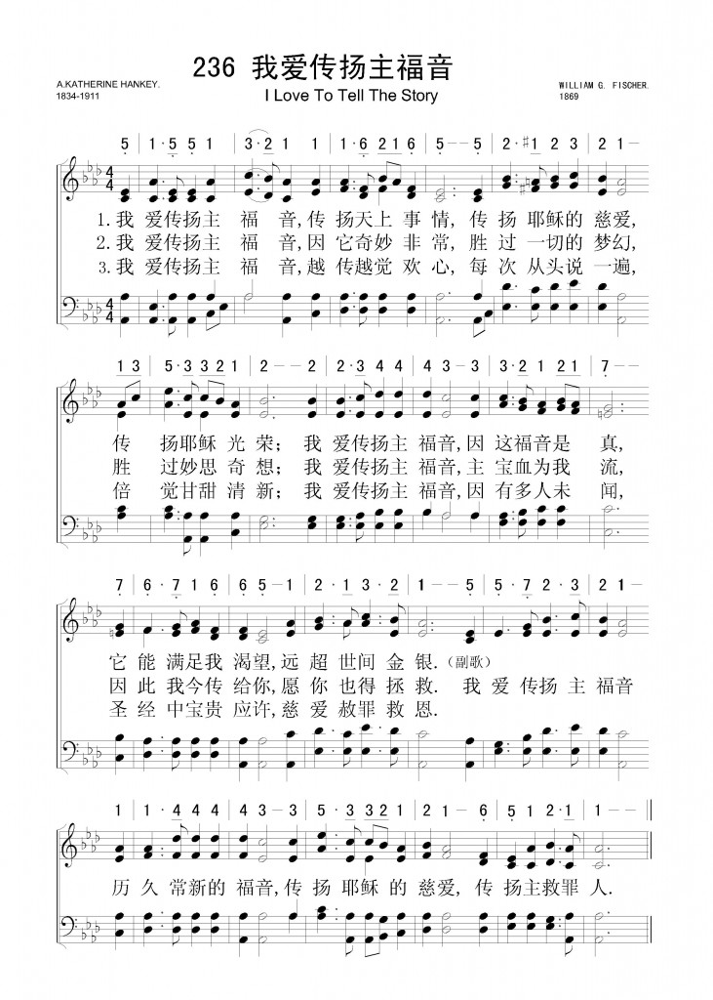
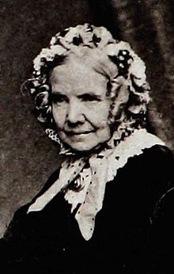
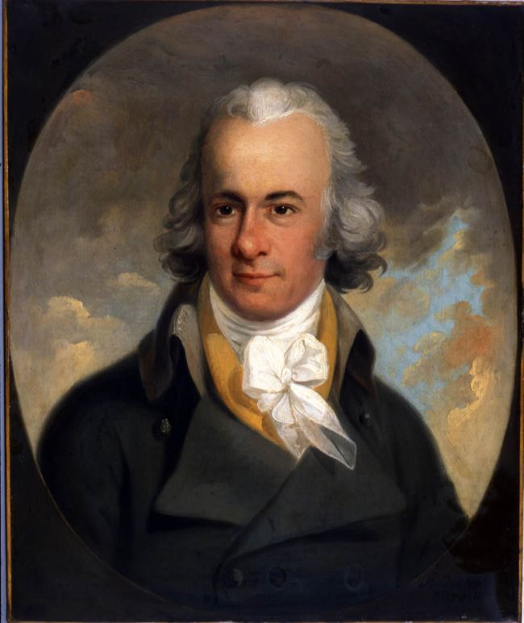
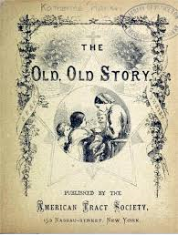
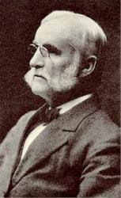
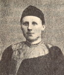
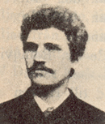

(請點耳機收聽)
(請點耳機收聽)耶穌囑咐祂的門徒要將福音傳到地極。 傳揚主福音是基督徒的本分，對靦腆木訥的人來講，則是萬分艱難，尤其是對方頗有辯才。 但是經驗告訴我們，越是反駁、辯論者，越有希望帶領他歸主。 傳福音最怕遇到冷漠沉默的人。
本詩作者韓凱玲（A. Katherine Hankey, 1834-1911）出身於富有的家庭，父親是英國的銀行家，關注佈道事工。 韓凱玲受她父親影響，也熱心傳福音，她特別關懷貧苦的人。十八歲時，在倫敦，為工廠的女工及商店的店員們開設查經班。
| 簡介 I Love to Tell the Story |
| This text is drawn from the second part of a 50-stanza poem on the life of Christ written in 1866, during the author’s recovery from a serious illness. The tune named for her first appeared three years later, and the composer was responsible for the creation of the refrain. |
Tell me the old, old story, Of unseen things above
|
(I love to tell the story) |
|
1 I love to tell the story of unseen things above: Refrain: 2 I love to tell the story. ’Tis pleasant to repeat 3 I love to tell the story, for those who know it best |
我愛傳揚主福音，傳揚天上事情，
|
|
 |
|
http://www.hymncompanions.org/Nov/13/stream.php
我愛宣傳主福音，講說耶穌救主，
如何自天上降臨，如何在世受苦；
我愛宣傳主福音，因為福音實在，
遠勝財寶與金銀，使我滿心歡愛。
我愛宣傳主福音，心中甚覺稀罕，
更覺此言日清新，勝過一切夢幻；
我愛宣傳主福音，其中恩惠很多，
因此樂傳主福音，使人受惠如我。
我愛宣傳主福音，常講耶穌至道，
重復述說給親鄰，倍覺馨香美好；
我愛宣傳主福音，還有多處未聞，
我應普遍告眾民，使人蒙神指引。
（副歌）
我愛宣傳主福音，稱頌主耶穌慈愛，
傳揚耶穌之福音，喜樂充滿我心。
(請點耳機收聽)
耶穌囑咐祂的門徒要將福音傳到地極。 傳揚主福音是基督徒的本分，對靦腆木訥的人來講，則是萬分艱難，尤其是對方頗有辯才。
但是經驗告訴我們，越是反駁、辯論者，越有希望帶領他歸主。 傳福音最怕遇到冷漠沉默的人。
本詩作者韓凱玲（A. Katherine Hankey, 1834-1911）出身於富有的家庭，父親是英國的銀行家，關注佈道事工。
韓凱玲受她父親影響，也熱心傳福音，她特別關懷貧苦的人。十八歲時，在倫敦，為工廠的女工及商店的店員們開設查經班。
五十年後，在她的喪禮中，有五個從前查經班的學生前來悼念。她曾一度赴非洲，看護她癱瘓的兄弟。在她搭牛車旅經鄉野時，深感海外宣教的重要；於是她從事寫作，將稿酬奉獻宣教事工。
她寫了許多主日學教材、慕道友手冊及詩歌。 1866年韓凱玲得重病，在她臥榻療養期間，她寫了耶穌生平的長詩，自正月開始寫，直到同年十一月才完成。
這首詩分成兩部份，各有五十節。 前部是「古老福音」（Tell Me the Old, Old
Story）， 後部是「我愛傳講主福音」。 日後成為兩首有名的聖詩。
古老福音
Tell
Me the Old, Old Story
請對我講主福音，講說天上妙事，
講說耶穌愛罪人，講說祂為人死；
簡單講說主福音，像對兒童講說，
因我軟弱又愚笨，滿了污穢罪過。
慢慢講說主福音，使我可以聽明，
神那奇妙的宏恩，如何救罪人心；
常常講說主福音，因我容易忘記，
像清晨草上甘露，日中就無蹤跡。
每逢我心恐慌時，請仍講主福音，
惟恐今世的虛榮，深深迷惑我心；
請對我講說福音，講說老舊福音，
請仍講主福音說：「耶穌使人潔淨！」
（副歌）
請對我講主福音，講那古老的福音。
講說耶穌愛罪人，講說耶穌救恩。
(請點耳機收聽)
1867年世界青年會在加拿大舉行國際大會。來自英國的羅素將軍（General Russell）在結束他的演講時，用這首詩的其中兩節，向會眾挑戰。
在座的福音詩歌作曲家杜恩（William H. Doane, 見三月十一日）深受感動，把這兩首詩帶回美國。
同年某一夏日，杜恩乘公共馬車赴教會途中，獲得靈感，先想到副歌的曲調，當晚完成了兩首歌曲。
1869年費城的一個鋼琴零售商費雪（William G. Fisher, 1835-1912），是指揮家，曾指揮千人大合唱。 他為「我愛宣傳主福音」另譜一曲，即今日我們常用之調。
舉世聞名的歌劇男低音海恩斯（Jerome Hines）曾灌唱這首歌。
他在美國大都會歌劇院演唱三十五年，並在世界各國舉行千餘場獨唱會，他可將如波瀾壯闊的歌聲，逐漸降至悄無聲息，他對聲音的幻化的控制悠然自如，撼動人心。
令人難以置信的是他在初中時，曾因不能唱準音調，而被學校的合唱團除名。
馬太福音廿八章十九節 「…你們要去使萬民作我的門徒…」這是耶穌在世最後的囑咐，教會把它稱為「大使命」。因此基督徒當守的本份是樂傳主福音，使全世界歸基督。下面這首詩歌是艾倫（Hattie
Bell Allen）作詞，麥堅尼（B.B. McKinney）作曲。
全世界歸基督
Christ
for the Whole Wild World
全世界歸基督！我任務剛開始，萬民期待神子信息，來救人施福祉。
是否聽任他們無法得聞聖言，沒認識主，死在罪中，祇因從未聽見？
全世界歸基督！必須傳祂福音，喚醒萬千垂死罪人悔改歸向真神。
主死為救世人，他們從未知曉，除非我們樂意奉獻，委派海外傳道。
全世界歸基督！甚願傳此福音，惟靠耶穌基督聖名救恩普及萬民。
我雖不到遠方，傳主救贖永生。惟願為先鋒隊祈禱。隨時為主作證。
（副歌）
願奉獻，願祈禱，每天見證作不休，
要使全世界萬千民眾都知救主大愛。
(請點耳機收聽)
中英文聖詩集參考
英文歌名 I
Love to Tell the Story
頌主新歌 467
頌主新歌(中英雙語) 471
教會聖詩 465
生命聖詩 263
新聖詩 232
歡欣讚美 444
聖徒詩集 593
聖詩 525
台語聖詩 204
世紀讚頌 488
頌主聖詩 488
校園詩歌I 232
英文歌名 Tell
Me the Old, Old Story
頌主新歌 259
生命聖詩 265
教會聖詩 18
英文歌名 Christ
for the Whole Wild World
頌主新歌 568
http://www.xueshengshi.com/?p=4335
我不以福音为耻，这福音本是神的大能，要救一切相信的。(罗1：16)
主耶稣复活升天前，吩咐了门徒一句话：「你们往普天下去，传福音给万民听。」（可16：15）门徒从那时起，开始传福音；从那时起一直到今天，不知有多少人都如同负着紧急的使命，不停息的推广福音，传扬主耶稣基督和祂同钉十字架。
这些传福音的使者，不但甘心费力，还有多少使者是撇下家中亲爱的人，走入荒漠海岛，甚至牺牲了自己的生命，把福音带给所有无望的族类。
世界上有什么事业比基督教传福音的事更广泛；世界上有何工作比传福音的工作更久远！它被推动的能力就是在两千年之前的一句话。主的话带着何等大的权威，那一个人说话能与主相比呢？「因为出于神的话，没有一句不带能力的」。
本诗的作者Katherine Hankey 生于1834年，是一富有的英国银行家之女儿。虽然全家属安立甘教会会友，但其父亲热衷于布道事工。从小受父亲影响，长大后为富有及贫穷的人成立主日学班，遍及伦敦市。为了主日学班的需要，她写了许多教导，慕道材料和诗歌。
当Katherine 仅30岁时，经历严重疾病。在疗养期间，写了以耶稣生平为主题的长诗，此诗包括两部份，每部份有五十节。根据前部份，她完成了一首名诗「告诉我那古老故事」。同年，当她恢复健康后，继续完成后部份，且根据这第二部份，写了「我爱宣传主福音」的名诗。
1 我爱宣传主福音，讲说耶稣救主，如何自天上降临，如何在世受苦；
我爱宣传主福音，因为福音实在，远胜财宝与金银，使我满心欢爱。
2 我爱宣传主福音，心中甚觉稀罕，更觉此言日清新，胜过一切梦幻；
我爱宣传主福音，其中恩惠很多，因此乐传主福音，使人受惠如我。
3 我爱宣传主福音，常讲耶稣至道，重复述说给亲邻，倍觉馨香美好，
我爱宣传主福音，还有多处未闻，我应普遍告众民，使人蒙神指引。
(副歌) 我爱宣传主福音，称颂主耶稣慈爱， 传扬耶稣之福音，喜乐充满我心。
＊福音是我的生命。在我的生涯中，我除了从事福音的宣传以外；我还没有思想过要从事何事。── 内村鉴三
https://ocbf.ca/2019/i-like-to-tell-the-story/
https://youtu.be/t8Ao3rmGzEE 我爱传讲主福音
當我在書桌前思考本期「詩歌與人生」專欄選題時，猛然想起從我開始寫聖詩故事至今已經過去了五個年頭，時間過得真快！通常每次寫這個專欄的第一步，我一般都會先從一首詩歌的知名度和詩歌反映的主題這兩個角度去選擇；就後者而言，五年間我寫的詩歌所涉及到的主題已經分別包括了讚美、感恩、禱告、平安、十架、救贖、主愛等主要領域，但總覺得還遺漏了什麼。此刻我突然想起，還有一個重要主題沒寫到，那就是基督徒的大使命–傳福音！一瞬間，一首熟悉的歌名即刻跳入到腦海�堙A那就是「我愛傳講主福音」！

「我愛傳講主福音」這首詩的作者是凱瑟琳.晗姬（Katherine Hankey ），1834年出生在英國首都倫敦城市南部一處叫做克拉朋(Clapham)的地方。那個社區在當時的倫敦頗有名氣，不僅是因為它是當地富裕人群集中居住的高級宅區，更重要的是那�埵矰F一批英國熱衷於推動社會改革的著名基督徒。因著這一特點，這些基督徒被稱之為「克拉朋聯盟」，其中最有名的領導人是歷史上大名鼎鼎的威廉.威伯福斯(William Wilberforce)，正是由於他的大聲疾呼和努力推動，大英帝國最終廢除了罪惡的奴隸制度。在那個時代因為該聯盟長期堅持不遺餘力地宣導廢奴、獄政改革、婦女兒童教育等重大社會改革，以及大力推動海外福音宣教事工，從而英國乃至世界都產生過重大影響。（左上圖為威伯福斯像）

凱瑟琳的父親是一位銀行家，同時也是克拉朋聯盟的領袖之一。在這樣家庭背景中長大的孩子，凱瑟琳不但受了良好的教育，具備了多方面的才華，而且在很年輕的時候就投身到神的事工上去，自十八歲起就開始在教會�堭苭D日學。和其他老師不太一樣的是，凱瑟琳在主日學教學中把關懷重點放在那些因為貧窮而讀不起書的普通女工們身上。為此她經常親自奔波於倫敦街頭，挨家挨戶去訪問窮人家庭，甚至去一家家商店�堸坉�那些年輕女孩在周日夜晚來教會學習聖經。在教學中她不僅親自認真編寫專門針對女工特點的學習教材、手冊及各種輔導材料，甚至還專門通過創作詩歌來引導、鼓勵大家的學習和進步。她的全心投入和無私付出深深地感動影響了了女工們的生命成長，學員中的許多人進而成為凱瑟琳終生的朋友，以致在五十年後她去世的葬禮上，還有當年參加過主日學學習的多名女工出現在前來悼念的人群中。
可即使如此，凱瑟琳作為一名年輕女性在當時正在英國興起的福音復興運動中仍然只是一名倫敦教會�媕q默無聞的普通平信徒，更很難與海外宣教事工有直接的關係，直到那年一次不平凡的旅途改變了她。當時，她那正在南非某地宣教的哥哥患了重病，因當地缺乏必要的醫療條件急需家�堥茪H到非洲接他返回英國治療，可此時家中除了她之外沒有其他合適的人可以抽得出來前往。於是只能由她獨自一人踏上遙遠的旅途，前往非洲。這次的旅行非常艱苦，首先要經過漫長孤寂常有風暴的的遠洋船行，到達非洲之後還要經過在荒山野嶺、崎嶇道路上的長途跋涉才能最後到達她哥哥的所在之地，而陸路上可依靠的所謂交通工具只不過是那些簡陋的牛車。毫無疑問，這對一個從來沒有出過遠門、身體比較虛弱的城市富家女來說是一次充滿著風險和挑戰的旅途。
靠著自己一路上虔誠的禱告以及在非洲陸地途中得到沿途宣教士的大力幫助，凱瑟琳歷經艱苦終於平安到達目的地。就是因為這次旅程，她深深地被那些在非洲蠻荒之地宣教的勇士們為傳福音所無畏的付出和犧牲精神所感動，從而也立志自己也要為宣教使命盡心出力，事實上還在等待弟弟身體條件允許踏上赴英歸途的非洲逗留期間，她就即刻開始作為一名臨時護士加入到當地有關宣教事工中去…。
結束了這趟不平凡的非洲之旅後凱瑟琳回到了倫敦。雖然環境變得安逸平靜，但她的內心始終沒有忘記自己立下的的誓言，默默地通過勤奮文字寫作來獲得版權和稿費，將其收入的全部奉獻給海外的宣教事業。時間到了1865-1866年的那個冬天，倫敦天氣特別寒冷，凱薩琳因此感染了重病，負責診治的醫師強迫她必須一整年地臥床療養。在這段養病期間，她回想起自己早年向在倫敦向女工們傳福音的經歷，以及她在非洲期間所看到的那些宣教士為福音所做的種種奉獻和犧牲，於是想圍繞主耶穌和祂的救贖大恩為引導，來寫一首與福音有關的長詩，並確定詩歌的名字為「一個古老的故事」。

有關凱瑟琳為什麼會用“古老的故事”作為詩歌的名字有一個感人的傳說。那是許多年前發生在一個愛爾蘭小鎮的故事。有一位一生奉獻給主的老傳教士因病即將離世，一位年輕的牧師聞訊前來他住處探望他。看到老人的病已經重到如此的地步，缺乏人生曆練的年輕牧師一時變得有點不知所措，不知道該說些什麼安慰的話，於是就喃喃自語起來；這時候突然從那個老人口�媔ヮ虓巨鉾禤z但卻十分清晰的聲音：“不必說其他，只講那古老，古老的故事…。”
1866年1月29日凱瑟琳寫完了這首長詩的第一部分，共五十行，她把這部分獨立取了分標題，叫「要聽的故事」(The Story Wanted)，詩的第一句就是“有一個古老、古老的故事”。之後，她又開始構思其第二部分，這部分因為健康狀況她直到同年11月份才最後完成。該詩也是五十行，對應前部分的分標題，這部分取名為「要說的故事」(The Story Told)。長詩寫完後當年凱瑟琳就將其發表在一本書�堙A但在作者署名時她僅僅使用了她的姓“晗姬”(Hankey)代替全名。
詩歌出版後，多才多藝的凱瑟琳還曾經自己為其譜了曲，然而我們現在所唱的歌卻並不是凱瑟琳所譜的曲調。圍繞著詩歌的譜曲又發生過不少有趣生動的故事。
凱瑟琳的長詩發表後的第二年，即1867年的春天在英國的海外屬地加拿大蒙特利爾舉行了基督教青年會的國際年會。會議期間有一個當時因為剛參加了愛爾蘭平叛而成為名人的將軍羅素（Russell）在會上作了自己的見證。他就是在這次會議召開的前不久才因為認識到耶穌是他的救主而成了基督徒。在快結束自己的發言前將軍從口袋�堮野X了凱瑟琳寫的詩歌，流著淚水當眾朗誦了這首詩，台下聽眾大受感動和激勵。那天台下的人群中有一位紳士名叫威廉.杜恩(William H. Diane)，他是大名鼎鼎的美國聖詩作曲家。會後他特地從羅素將軍那�堭o到了這兩首詩的副本並將其帶回了美國，之後他就一直在思考醞釀如何為它配上好的旋律。

同年夏天的一天，杜恩正乘坐公共馬車在前往教會的途中，突然心中充滿了創作靈感，他首先想出一段旋律非常合適作為凱瑟琳詩歌的副歌曲調，當晚回到家後他又再接再厲完成了整首歌的曲譜創作。因為他所改編的歌詞是取自凱瑟琳長詩歌的第一部分即「要聽的故事」，故最後他這首歌名定為「告訴我這古老的故事」（Tell me the old, old Story）。1870年杜恩首次將其發表在他出版的「忠誠之歌」（song of devotion）詩歌選集之中，排在第240首。然而，儘管杜恩才華洋溢、大名鼎鼎，譜寫過的聖詩曲譜多達二千餘首，包括他為有“聖詩皇后”之譽的盲人女詩人芬妮.克羅斯比所寫的「榮耀歸於主」「近主十架」「安穩在耶穌手臂」「我願意更像耶穌」等著名聖詩，然而這首他譜的詩歌在發表後卻未能產生顯著的影響。（左圖為杜恩像）
故事仍在繼續延續。此時又有一個人看到了凱瑟琳寫的長詩，也深受感動。這個人的名字叫威廉.費雪（William G. Fisher, 1835-1912）。費雪從八歲起就在所屬教會�媥Е葥蛜q和各種樂器，後來成為一名著名的詩班領隊和指揮，經常參與當地福音興奮會上的音樂服事。也許是因為有這一背景，他對凱瑟琳的詩，印象更深、更感興趣的是第二部分，即「要說的故事」(The Story Told)，覺得其內容很適合於宣教所用。於是他就專門為此創作了曲譜。詞曲定稿後他將詩歌命名為I Love to Tell the Story，中文直譯應是“我愛傳講這故事”，但在詩歌傳入中國時被譯者根據歌詞內容將歌名改為「我愛傳講主福音」。費雪譜曲的這首詩歌在1869年正式發表後因為得到大佈道家穆迪(D. L. Moody)和他團隊的著名作曲家艾拉.桑基(Ira Sankey)的讚賞，不但收入到他們的詩集中，而且經常在他們在世界各地舉辦的大型佈道會上使用，從因而迅速走紅，最後成為這首流傳至今依然充滿生命力的著名聖詩。（（上圖為費雪的墓碑及雕塑像））
下麵就是這首詩歌的歌詞：我愛傳講主福音
一、我愛傳講主福音，傳講天上妙事，
傳講耶穌愛罪人，傳講祂為人死；
我愛傳講主福音，福音是神大能，
能救罪人免沉淪，能叫死人得生。
二、我愛傳講主福音，福音美妙稱心，
勝過奪人的奇珍，勝過所夢黃金；
我愛傳講主福音，福音益我何多，
使我得到一新心，使我得進神國。
三、我愛傳講主福音，因人多未聽見，
神是如何的慈仁，如何充滿愛憐；
我愛傳講主福音，因那常聽之人，
仍是饑渴要聽聞，像那未聽之人。
四、我愛傳講主福音，越傳越覺甘甜，
每逢對人來講論，越講越覺新鮮；
等我進到榮耀境，所唱之歌必新，雖新，
仍是這一生所愛古老福音。
整首詩歌的文字結構非常有特色，作者在每一段每一節的開始都使用最鮮明直接的第一人稱“我”作為主語開始，然後使用最具感情色彩的“愛”作為動詞，從而引出“傳講主福音”這一主題。在接下來的各段歌詞中作者又分別通過對聖經中的福音內容的介紹和讚美，以及自己對傳講福音重要性的認識和得著，來不斷深化主耶穌和信徒，信徒和福音這兩者的關係。全詩包含真情，娓娓道來，前後呼應，引人入勝。
當我寫到這�婺T不住想起早期西方宣教士在為將這古老又美好的福音傳入中國這片土地過程中所付出的巨大代價。據中外學者對1807年至1850年期間來到中國最早的143位宣教士生平的統計研究，他們抵達中國時的平均年齡是27歲，來華前身體條件均十分健康，但抵達中國後卻有百分之四十的人在40歲前就環境和健康原因而死亡，而同時期在他們出生的原居住國，平均壽命是63歲；這批宣教士的子女在華的死亡率更比同期的英美國家兒童高出三倍。


我又想起那些為傳播這一福音在1900年中國“庚子教難”期間犧牲的宣教士的故事。在那個恐怖時期總共有241名宣教士被殘酷殺害，把他們的熱血灑在中國的土地上。許多人在死之前留下了遺言，他們絲毫不為自己來中國的選擇後悔，心甘情願地為這個福音付出自己的生命。其中一名叫卡爾.朗伯格（Carl L. Lundbrg）是來自瑞典的宣教士，在他和他的妻子和兩個女兒一起殉難前在寫給家人的信中這樣寫道：“請轉告我們的朋友，我們是為主和中國而活，也是為主和中國而死，雖然地上的通路是截斷的，但通往主的路是敞開的”；“我並不為蒙召來中國傳福音而感到遺憾，既然主已經呼召我，祂的恩典是夠我用的。祂為我所揀選的路是最美好的，願主旨意成全！” （上圖為卡爾.朗伯格夫妇像）
親愛的讀者，今天我介紹的這首詩歌所傳講的故事（福音）至今已經過去了兩千多年，由這位凱瑟琳女士寫的這首詩歌也已經傳唱了一百五十多年。（左圖為作者像）在過去的歷史長河中，這福音所傳到之處，無論時代，無論國別，無論民族、無論代價，無數人願意接受這個福音，承認自己是一個罪人，願把耶穌作為自己生命的救主，成了祂的信徒，並按祂的囑咐再把這個福音傳給其他未信的人，如此年復一年，代代相傳，從而使得如今世界上的基督徒總人數發展到二十四億之多，其中包括數千萬的中國人（官方統計數字是3800萬；非官方估計在8000萬上下）。兩千多年過去，這個故事（福音）的主角-耶穌，祂曾說過的每一句話至今仍然充滿著權柄和生命的活力，祂所預言的“末世”時代特徵越來越被今日世界所證實，祂所說的“我必再來”的那一天正在越來越臨近，每一位聽祂話並遵行的人必得到祂應許的榮耀！親愛的朋友，如果今天你還不是基督徒，真情祝願這古老的故事此刻進入你的心，從此讓你得著、享受這世間最美好的福音！
https://hymnstudiesblog.wordpress.com/2017/02/20/tell-me-the-old-old-story/
“TELL ME THE OLD, OLD STORY”
“Christ died for our sins…was buried, and…rose again the third day…” (1 Cor. 15:3-4)
INTRO.:
A song about the importance of telling the old gospel story of how Christ died, was buried, and rose again is “Tell Me the Old, Old Story” (#534 in Hymns for Worship Revised, #279 in Sacred Selections for the Church). The text was written by Arabella Catherine Hankey, who was born at Clapham, England, an elite southwestern suburb of London, on Jan. 12, 1834, the daughter of Thomas Hankey. Her father was a wealthy English banker and was a member of William Wilberforce’s evangelical “Clapham Sect” of the Church of England, which had worked to abolish slavery and the slave trade in the British Empire. Known to her family and friends as “Kate,” she became involved in religious work while still in school. As a young girl, she enthusiastically began teaching a children’s Sunday school in Croydon. When just eighteen, she organized a Bible study class for shop girls in London factories.
Then, as a result of a trip to South Africa to bring home an invalid brother, Kate became deeply interested in foreign missions, and to that cause she contributed all the royalties from her various publications in later years, including her Bible Class Teaching and many books of verses. One such work was a long poem on the life of Christ entitled The Old, Old Story. In 1864, Kate experienced a serious illness at the age of thirty and later penned the poem in 1866 while recovering. It was divided into three headings. The first, “The Story Wanted,” was completed on Jan. 29, 1866 and is the source of this hymn. The second was “The Story Told,” from which the familiar hymn “I Love to Tell the Story” came. The third was “The Story Welcomed.” Originally, Kate provided her own melody for this hymn.
However, a new tune (Evangel or Old Old Story) was composed and the chorus added in 1867 by William Howard Doane (1832-1915). That year, he was attending the International Meeting of the Y.M.C.A. in Montreal, Quebec, Canada. Major General Russell, commander of the English forces in Ireland, quoted Hankey’s poem and gave Doane a copy. One hot summer afternoon, while traveling home on a stagecoach between Glen Falls House and Crawford House in the White Mountains of New Hampshire, Doane set down the music. That night it was sung by his companions in the parlor of the hotel. First printed as sheet music, the song appeared later that same year in Doane’s Silver Spray, published at Cincinnati. During her last years, Kate Hankey was active in hospital visitation work at London. She died at Westminster in London, England, on May 9, 1911.
Among hymnbooks published by members of the Lord’s church for use among churches of Christ, “Tell Me the Old, Old Story” has appeared in the 1925 edition of the1921 Great Songs of the Church (No. 1) and 1937 Great Songs of the Church No. 2 both edited by E. L. Jorgenson; the 1935 Christian Hymns (No. 1), the 1948 Christian Hymns No. 2, a0nd the 1966 Christian Hymns No. 3 all edited by L. O. Sanderson; the 1963 Abiding Hymns edited by Robert C. Welch; the 1963 Christian Hymnal edited by J. Nelson Slater; the 1965 Great Christian Hymnal No. 2 edited by Tillit S. Teddlie; the 1971 Songs of the Church, the 1990 Songs of the Church 21st C. Ed., and the 1994 Songs of Faith and Praise, all edited by Alton H. Howard; the 1978/1983 Church Gospel Songs and Hymns edited by V. E. Howard; the 1992 Praise for the Lord edited by John P. Wiegand; the 2007 Sacred Songs of the Church edited by William D. Jeffcoat; the 2009 Favorite Songs of the Church and the 2010 Songs for Worship and Praise both edited by Robert J. Taylor Jr.; and the 2012 Psalms, Hymns, and Spiritual Songs edited by Steve Wolfgang et. al.; in addition to Hymns for Worship and Sacred Selections.
The song expresses the desire to hear the old, old story of Jesus Christ.
I. From stanza 1 we find the desire to hear the story of Christ’s love
Tell me the old, old story of unseen things above,
Of Jesus and His glory, of Jesus and His love.
Tell me the story simply, as to a little child,
For I am weak and weary, and helpless and defiled.
II. From stanza 2 we find the desire to hear the story of Christ’s redemption
Tell me the story slowly, that I may take it in,
That wonderful redemption, God’s remedy for sin.
Tell me the story often, for I forget so soon;
The early dew of morning has passed away at noon.
III. From stanza 3 we find the desire to hear the story of Christ’s salvation
Tell me the story softly, with earnest tones and grave;
Remember I’m the sinner whom Jesus came to save.
Tell me the story always, if you would really be,
In any time of trouble, a comforter to me.
IV. From stanza 4 (not in HFWR) we find the desire to hear the story of heaven
Tell me the same old story when you have cause to fear
That this world’s empty glory is costing me too dear.
Yes, and when that world’s glory is dawning on my soul,
Tell me the old, old story: “Christ Jesus makes thee whole.”
CONCL.: The chorus then emphasizes the importance of telling the story that it might be heard
Tell me the old, old story,
Tell me the old, old story,
Tell me the old, old story,
Of Jesus and His love.
If I hope to please God here and have a home in heaven, I must continually express the attitude, “Tell Me the Old, Old Story.”
https://en.wikipedia.org/wiki/Katherine_Hankey
Arabella Katherine Hankey (12 January 1834 – 9 May 1911)[1] was an English missionary and nurse who is best known for being the author of the poem The Old, Old Story, from which the hymns "Tell me the old, old story" and "I Love to Tell the Story" were derived.[2][3]
Hankey was born in 1834, the daughter of a prosperous banker in London. Her family were devout Anglicans and members of the Clapham Sect. She was inspired by the Methodist revival of John Wesley and organised and taught in Sunday schools in London. She then did missionary work as a nurse in South Africa, assisting her brother.[2]
In 1866, she had a serious illness and was bedridden for a long convalescence.[3] During this time, Hankey wrote her long poem, entitled The Old, Old Story,[4] with 100 verses in two parts: The Story Wanted and The Story Told.[2]
She recovered from the illness and lived to the age of 77, dying in 1911.[citation needed]